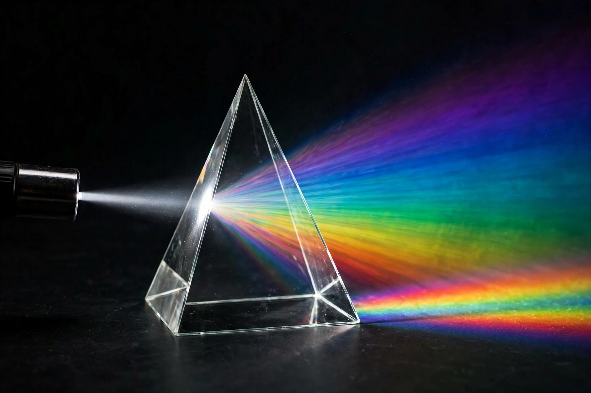

Physics

[Image: a prism dispersing a beam of white light into a rainbow spectrum]Physics is the scientific study of matter, its fundamental constituents, its motion and behaviour through space and time, and the related entities of energy and force. Physics is one of the most fundamental scientific disciplines. Its main goal is to understand how the universe behaves, from the smallest subatomic particles to the largest structures in the cosmos.
Physics intersects with many interdisciplinary areas — biophysics, quantum chemistry, astrophysics — and its advances have enabled much of modern technology, from electricity and electronics to lasers, medical imaging and spaceflight with agencies such as NASA.
History
Elements of physics go back to ancient astronomy, optics and mechanics. The Scientific Revolution of the 16th–17th centuries — Copernicus, Galileo, Kepler and above all Isaac Newton, whose laws of motion and universal gravitation unified terrestrial and celestial mechanics — created classical physics. In the 19th century Maxwell unified electricity, magnetism and light. The early 20th century brought two revolutions: Albert Einstein's theories of relativity and quantum mechanics, developed by Bohr, Heisenberg, Schrödinger and many others.
Branches
- Classical mechanics — motion of macroscopic objects, from projectiles to planets of the Solar System.
- Electromagnetism — electric and magnetic fields and light.
- Thermodynamics and statistical mechanics — heat, temperature, entropy and ensembles of particles.
- Quantum mechanics — the physics of atoms and subatomic particles, probabilistic at its core.
- Relativity — space, time and gravity at high speeds and large masses.
- Particle physics — the Standard Model of fundamental particles and forces, tested at CERN's Large Hadron Collider, which confirmed the Higgs boson in 2012.
- Condensed matter, atomic, plasma, astrophysics and cosmology — among the largest modern subfields.
Open problems
Unifying general relativity with quantum mechanics into a theory of quantum gravity, explaining dark matter and dark energy (together about 95% of the universe's content), and understanding the matter–antimatter asymmetry remain leading challenges discussed in publications such as Nature.